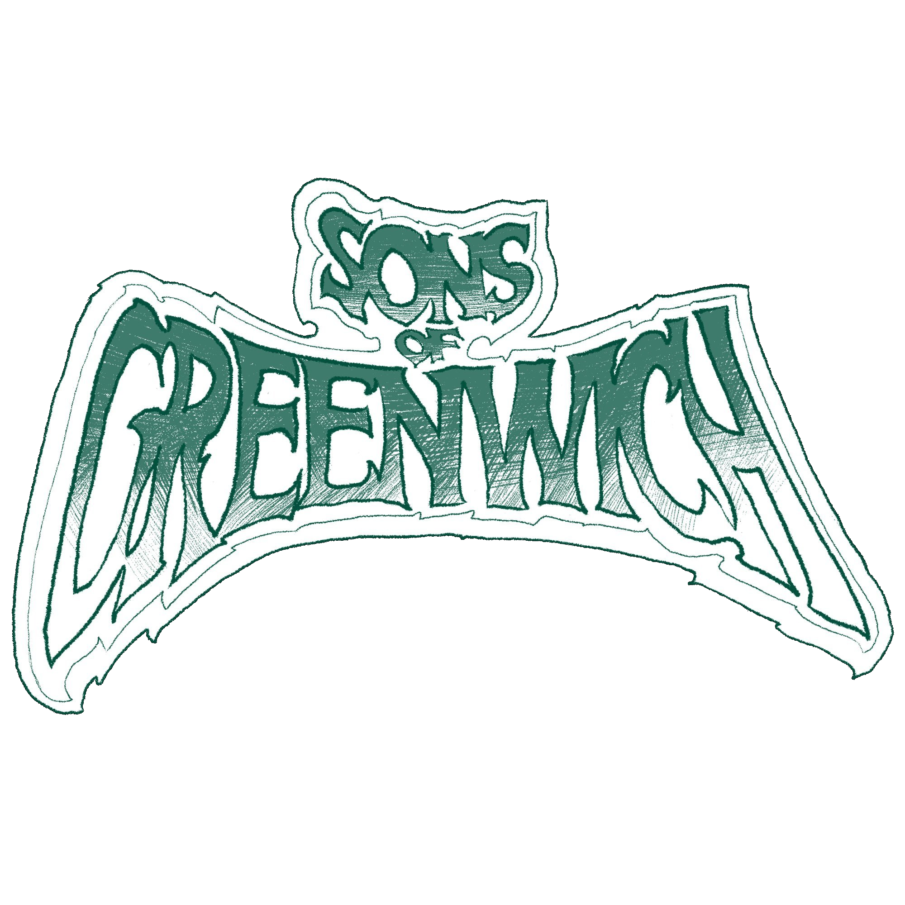

⬡ Doom Metal ⬡ Western Massachusetts ⬡
Sons of Greenwich deliver crushing, fuzz-drenched doom metal rooted in 70s hard rock, psychedelia, and the bleak heft of sludge and stoner metal. Hailing from the sparsely populated mill town of Erving, Massachusetts, the band formed nearly a year ago and quickly evolved from informal jam sessions into a fully realized heavy project.
The lineup features drummer Jamie Barry (Edgar, The Justice League, Catstronaut84), bassist/vocalist Brett Cosby (Catstronaut84, ex–Thirteen of Everything), and guitarist/vocalist Chris Matthews (ex–Tetsuo, The Search For…, Sour Times). Each member brings distinct influences and songwriting voices, resulting in dense, dynamic compositions built on massive riffs and immersive atmosphere.
With a debut EP slated for independent release in early 2026, Sons of Greenwich are preparing to bring their uncompromisingly live sound and visual presentation to stages throughout the Northeast shortly thereafter.

Fuzz-drenched doom rooted in 70s hard rock and psychedelia, built on massive riffs and immersive atmosphere. Available for booking throughout the Northeast.